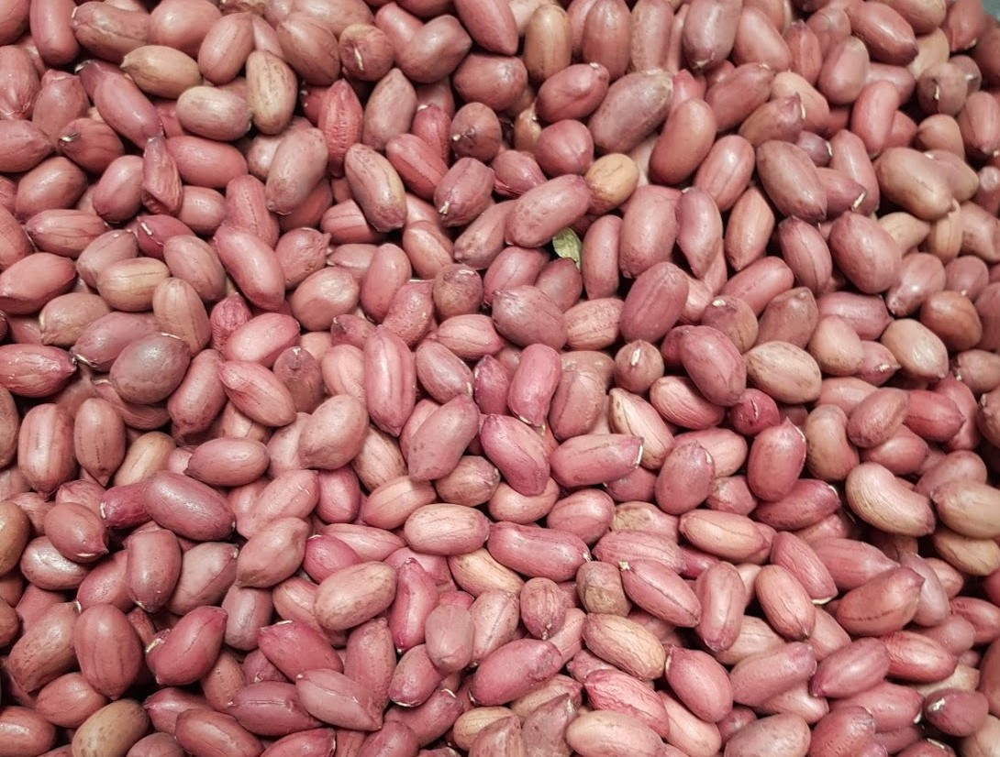
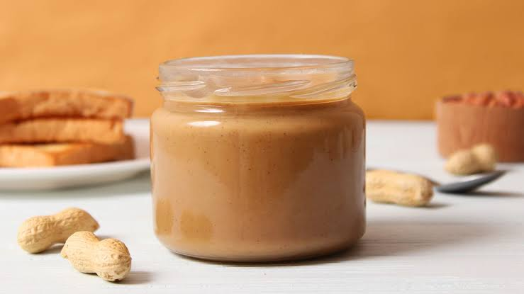
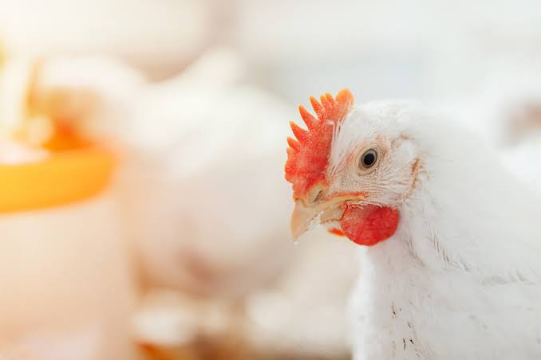
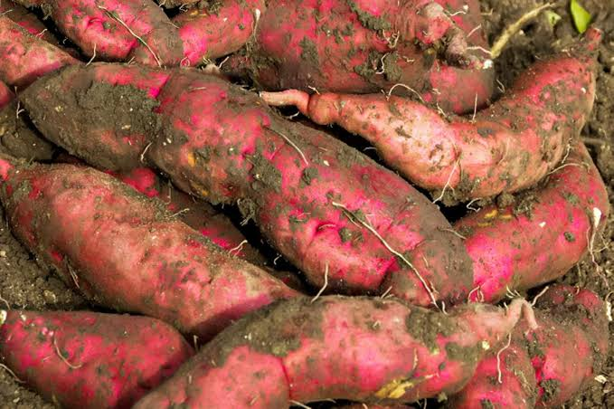

Diary Products
Fresh Milk
Fresh milk is one of the flagship products we offer, representing the epitome of quality, nutrition, and freshness. Our locally sourced milk is produced by our dedicated dairy farmers, who adhere to rigorous standards of hygiene and animal care. With a commitment to providing the community with wholesome and pure dairy products, we offer fresh milk that is free from additives and preservatives. Each litre of fresh milk is carefully processed and packaged to preserve its nutritional value and natural goodness. By choosing our fresh milk, consumers can enjoy a nutritious and delicious beverage while supporting local farmers and contributing to the sustainability of our cooperative.

Sour Milk
We take pride in offering sour milk as one of our premium products, showcasing the rich cultural heritage and traditional dairy practices of our community. Our sour milk is carefully fermented to perfection, resulting in a unique and tangy flavor profile that is beloved by many. It is made from high-quality fresh milk sourced from our dedicated dairy farmers, ensuring its superior taste and nutritional value. Each litre of our sour milk is crafted with expertise and attention to detail, providing consumers with a delightful and refreshing beverage option. By choosing our sour milk, customers not only indulge in a delicious treat but also support the local dairy industry and contribute to the economic sustainability of our cooperative.

Groundnut Products
Groundnuts
Groundnuts are a cherished and nutritious product we offer, reflecting the dedication and expertise of our farmers in cultivating this versatile crop. Our groundnuts are carefully grown and harvested to ensure optimal flavor and quality. Each kernel is rich in protein, healthy fats, and essential nutrients, making it a valuable addition to a balanced diet. Customers enjoy the nutritional benefits and culinary versatility of groundnuts while supporting our local farmers and the sustainability of our cooperative. Whether used as a snack, incorporated into recipes, or pressed for oil, our groundnuts are a testament to our commitment to providing high-quality agricultural products that nourish both body and community.

Peanut
We are delighted to present our homemade peanut butter, a delectable and nutritious product that captures the essence of our locally grown groundnuts. Our peanut butter is crafted with utmost care and attention, using only the finest quality groundnuts and a traditional recipe that showcases the natural richness and flavor of this beloved spread. Each jar of our peanut butter is made with love and dedication, ensuring a smooth and creamy texture that delights the taste buds. Packed with protein, fiber, and healthy fats, our peanut butter is a wholesome addition to any meal or snack. Our customers enjoy the taste and nutritional benefits of our homemade peanut butter while supporting the local farmers and the sustainability of our cooperative. Whether spread on toast, used as a dip, or incorporated into recipes, our peanut butter is a testament to our commitment to delivering high-quality, locally sourced products that nourish both body and community.

Poultry Products
Chicks
We offer high-quality chicks as part of our agricultural products. Our chicks are carefully sourced and bred from superior genetic lines, ensuring their health, vitality, and potential for growth. Each chick is nurtured with utmost care and provided with optimal conditions to thrive. The chicks are known for their strong immune systems, robustness, and adaptability to local environments. Whether you are a seasoned farmer or a beginner venturing into poultry farming, our chicks are an ideal choice to start or expand your flock. We provide a variety of breeds to suit different farming goals and preferences. By choosing our chicks, customers can be confident in the quality and performance of their poultry operations. We are committed to supporting the success of our customers in the poultry industry while contributing to the sustainable development of our community.

Eggs
We offer farm-fresh eggs as part of our diverse range of agricultural products. Our eggs come from healthy and well-cared-for hens raised by our dedicated farmers. Each egg is carefully inspected to ensure its quality and freshness, meeting the highest standards of food safety. Our eggs are a nutritious and versatile addition to any meal, providing a rich source of protein, vitamins, and minerals. We offer our eggs in convenient trays. Customers enjoy peace of mind knowing they are consuming wholesome and responsibly sourced eggs. We take pride in delivering superior quality eggs that contribute to the health and well-being of our community while supporting the efforts of our local farmers.
Broilers
We are pleased to offer high-quality broilers as part of our exceptional range of poultry products. Our broilers are raised with utmost care and attention to ensure optimal growth, health, and meat quality. We provide broilers that are bred for their superior genetics, resulting in tender and flavorful meat. We understand the importance of offering affordable high-value products to our customers to ensure accessibility for individuals and families seeking to enjoy delicious and nutritious poultry meat. By choosing our broilers, customers can savor the delectable taste and succulent texture of our poultry while supporting local farmers and the sustainability of our cooperative. We take pride in delivering top-notch broilers that meet the highest quality standards, providing a satisfying dining experience for all.

Layers
We also take pride in offering high-quality layers as part of our exceptional range of poultry products. Our layers are carefully selected and bred for their superior genetics, ensuring optimum egg production and the overall health of the birds. Each layer is raised in a conducive environment, receiving proper nutrition, care, and veterinary attention to ensure their well-being. We are committed to providing affordable yet high-value products to our customers, allowing individuals and farmers to establish or expand their egg-laying operations with reliable and productive layers. By choosing our layers, customers can expect consistent egg production, quality eggs, and the potential for profitable returns. We are dedicated to supporting the success of our customers in the poultry industry while contributing to the sustainable development of our community.
Sweet Potato Products
Sweet Potatoes
We are proud to offer sweet potatoes as a delicious and nutritious product that reflects the rich agricultural heritage of our community. Our sweet potatoes are grown with care and expertise, ensuring their superior quality, taste, and nutritional value. Each sweet potato is packed with vitamins, fiber, and natural sweetness, making it a versatile ingredient for a wide range of culinary creations. Customers support local farmers, promote sustainable agriculture, and savor the natural goodness that our cooperative takes pride in delivering. Whether roasted, boiled, mashed, or used in various recipes, our sweet potatoes are a testament to our commitment to delivering high-quality, locally sourced products that nourish both body and community.

Porridge Flour
We are delighted to present our sweet potato porridge flour, a wholesome and convenient product that showcases the versatility and nutritional value of sweet potatoes. Our porridge flour is made from high-quality sweet potatoes, carefully selected and processed to retain their natural goodness. Packed with essential vitamins, minerals, and dietary fiber, our sweet potato porridge flour offers a nourishing and satisfying option for a wholesome breakfast or a comforting snack. We believe in providing affordable and accessible products to our community ensuring that they are within reach for individuals and families seeking a nutritious and delicious alternative. By choosing our sweet potato porridge flour, customers support local farmers, promote sustainable agriculture, and enjoy the natural benefits of this nourishing superfood.